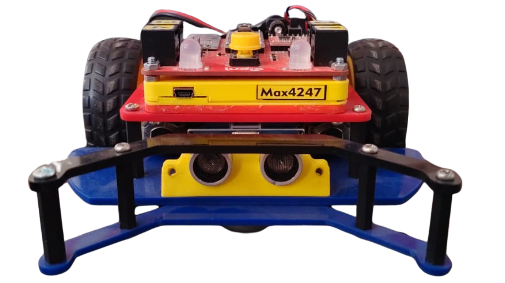

RECURSO INTERACTIVO PARA EL AULA
¿A quién elegirá
el robot?
Elige tu compañero robótico, activa el sonido y pásalo de mano en mano. ¡Cuando se detenga, habrá elegido!
JARDÍN ENCANTADO

Bee-Bot
Un zumbido entre flores
Entrar al jardín →CIUDAD CIBERNÉTICARugged
¡Pi-pi-pi-po! Radar activado
Explorar la ciudad →MUNDO NEÓN
Ludio
¡Luces, música y descubrimientos!
Iniciar misión →Sin sensores · El tiempo se elige automáticamente o por el profesor · Funciona sin internet